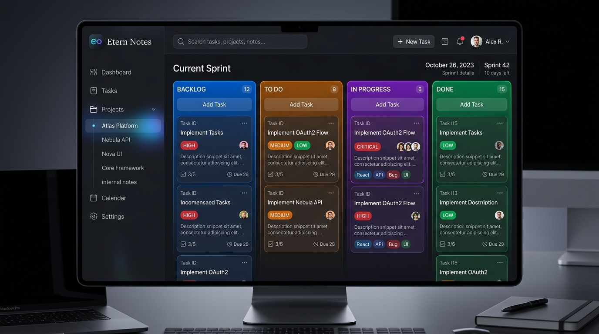

● Disponible Ahora
Etern-Notes
Gestor de proyectos y tareas para desarrolladores. Incluye tableros Kanban personalizados con colores, seguimiento de plazos, prioridades y listas de control.

Bienvenido a Etern Studio. El centro principal para descargar nuestras 4 aplicaciones ultraligeras, elegantes y sin distracciones.
Acceso directo y descarga inmediata para las 4 aplicaciones de Etern Studio.
Gestor de proyectos y tareas para desarrolladores. Incluye tableros Kanban personalizados con colores, seguimiento de plazos, prioridades y listas de control.

Gestor de fragmentos de código (code snippets) con resaltado de sintaxis multilenguaje, búsqueda instantánea y almacenamiento local cifrado.
Temporizador Pomodoro minimalista con sonidos ambientales para concentración profunda y estadísticas de sesiones de trabajo.
Editor de diagramas de flujo y mapas mentales vectoriales super rápido con exportación a SVG y PNG.
Todas nuestras herramientas son 100% gratuitas y de código abierto. Si te resultan útiles, ¡puedes apoyarme invitándome a un café!
Cada café ayuda a mantener el desarrollo de las 4 aplicaciones de Etern Studio activas y actualizadas.
Apoyar en Ko-fi / BuyMeACoffee ☕